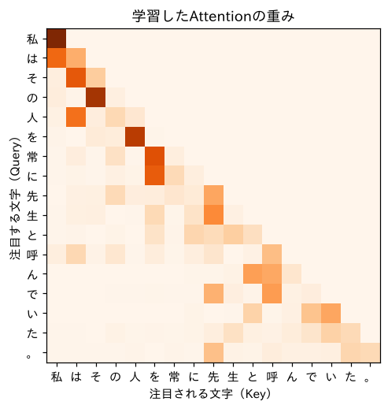

第3部 Transformerを組み立てる · 第11章
注目する仕組み：Self-Attention
どの文字に注目するかを、文字どうしが話し合って決める
おすすめは「ページを読みながら、コードを自分のノートブックに1セルずつ貼って実行」。完成ノートは困ったときの答え合わせ用です。
つくるもの
GPTの心臓部 Self-Attention を一行ずつ自作し、それだけで動く小さな言語モデルを学習させる
身につく数学・理論
- 全位置で同時に「次」を予測する学習
- 過去の平均を行列の掛け算で一気に計算
- マスク付きsoftmax（未来を見ない）
- 内積＝似ている度
- Query・Key・Value
- で割る理由（分散の話）
- 位置埋め込み（Attentionは順番を知らない）
新しく使うPython・PyTorch
torch.trilとmasked_filltransposeで行列の向きを変えるregister_buffer- ブロードキャストつきの
@
この章でつくるもの
第9章のMLPは「直前8文字を横一列に並べて」見ていました。でも、この方法では窓を広げるほどパラメータが増え、しかも「どの文字が大事か」を場面ごとに変えられません。この章では、場面に応じて、どの過去の文字に注目するかを自分で決める仕組み Self-Attention を、ゼロから組み立てます。2017年の論文「Attention Is All You Need」で提案され、GPTを含む現代のほぼすべてのLLMの心臓部になっている仕組みです。
これまでの復習とつながり：これまでの復習（第3・6・9・10章とのつながり）
Self-Attention は一見むずかしそうですが、実はここまで学んだ4つの部品をそのまま組み合わせたものです。
- 第3章（
softmaxと温度）：生の点数（スコア）を「合計が1の正の重み」に変える仕組み。点数の差が大きすぎると1位だけ確率1に尖りすぎることも学びました。 - 第6章（行列の掛け算
@とテンソルの形）：[M, K] @ [K, N] → [M, N]のルールと、「for文を行列積にまとめると一気に速くなる」発想をフル活用します。 - 第9章（文字の埋め込み
nn.Embedding）：文字IDを長さCのベクトルへ変換し、nn.Moduleとして層を組み立てました。 - 第10章（足し算と分散の膨らみ）：たくさんの数を足すとばらつき（分散）が大きくなる性質。これが「なぜ で割るのか」の決め手になります。

ミナト
「注目する」って、人間みたいなことをするんですね。

ボンゴ先生
「先生は奥さんの顔を見て、彼女に……」の「彼女」が誰か分かるのは、キミが「奥さん」に注目したからだ。直前の「て、」を見ても分からない。どこを見るべきかは、文の内容しだいで変わる。それを、文字たちが自分たちで話し合って決める。それがAttentionだ。話し合いの方法は、意外なほど単純だよ。
準備と、新しい問題の出し方
import re, math, urllib.request
import torch
import torch.nn as nn
import torch.nn.functional as F
def load_soseki(file_id="773_ruby_5968"):
url = ("https://raw.githubusercontent.com/aozorahack/aozorabunko_text/0984f7dc18a2270bdfd2ff99bf14fd1b3ebb4f65/"
f"cards/000148/files/{file_id}/{file_id}.txt")
try:
with urllib.request.urlopen(url, timeout=30) as res:
text = res.read().decode("cp932")
except Exception as e:
raise RuntimeError(f"青空文庫の取得に失敗しました（時間をおいて再実行するか付録Eを参照）: {e}") from e
text = text.split("-------------------------------------------------------")[2]
text = text.split("底本：")[0]
text = re.sub(r"《.*?》", "", text)
text = re.sub(r"※?［＃.*?］", "", text)
text = text.replace("｜", "").replace("\r\n", "\n")
text = re.sub(r"\n{3,}", "\n\n", text)
return text.strip()
text = load_soseki()
chars = sorted(set(text))
V = len(chars)
stoi = {ch: i for i, ch in enumerate(chars)}
itos = {i: ch for ch, i in stoi.items()}
data = torch.tensor([stoi[c] for c in text])
n = int(len(data) * 0.9)
train_data, val_data = data[:n], data[n:]
def get_batch(data, batch_size, T, g):
ix = torch.randint(0, len(data) - T, (batch_size,), generator=g)
x = torch.stack([data[i:i + T] for i in ix])
y = torch.stack([data[i + 1:i + T + 1] for i in ix]) # 1文字ずらしたもの
return x, y
g = torch.Generator().manual_seed(0)
x, y = get_batch(train_data, 1, 8, g)
print("入力：", repr("".join(itos[i] for i in x[0].tolist())))
print("正解：", repr("".join(itos[i] for i in y[0].tolist())))入力： '私の注意を母より'
正解： 'の注意を母よりは'第9章までと違うところに気づきましたか？ 今回は 正解も8文字 です。入力の8文字それぞれについて、「その次の文字」を予測させます。
| 位置 | 見てよい文字 | 予測する文字 |
|---|---|---|
| 0 | 私 | の |
| 1 | 私の | 注 |
| 2 | 私の注 | 意 |
| … | … | … |
| 7 | 私の注意を母より | は |
1つの窓から8問作れるので、効率がいいのです。ただし大事なルールがあります。位置 t の予測には、位置 t までの文字しか使ってはいけない。位置2で「意」を予測するときに、位置3にある「意」そのものを見たら、それはカンニングです。
基礎の補足なぜ「1文字ずらし」で全位置同時に学習できるのか？
第9章のMLPでは「8文字 → 次の1文字」という1問だけを作っていましたが、GPT系の言語モデルでは x と y を両方とも長さ T にして、1文字ぶん右にずらして並べます。
# 例：長さ T = 4 の窓を切り出すイメージ
text_ids = [10, 20, 30, 40, 50]
x = text_ids[0:4] # [10, 20, 30, 40] 入力（位置 0, 1, 2, 3）
y = text_ids[1:5] # [20, 30, 40, 50] 正解（各位置の「次の文字」）
# 位置 0: [10] → 20 を当てる
# 位置 1: [10, 20] → 30 を当てる
# 位置 2: [10, 20, 30] → 40 を当てる
# 位置 3: [10, 20, 30, 40] → 50 を当てる位置 t の正解 y[t] は、入力 x[t + 1] とまったく同じ文字です。だからこそ「未来の位置 t + 1 以降を見ない」というルール（因果マスク）が絶対条件になります。
なお、学習時にモデル自身の予測結果ではなく正解のトークン列 x を全位置へ一気に与えて次トークンを同時に予測させるこの学習法を 教師強制（teacher forcing） と呼びます（第8章の1文字ずらしの多位置版）。また、長さの異なる文をバッチにまとめる実務やチャット学習では、因果マスクに加えて「余白（パディング）を無視する attention_mask」と「質問部分の損失を除外する 損失マスク（ignore_index=-100）」も併用します（第18章で実装します）。
ステップ1：過去を「平均」してみる
各位置が過去の情報を集める、いちばん簡単な方法は「自分と、自分より前の全員の平均をとる」ことです。埋め込みの代わりに、でたらめなベクトルで試してみます。
torch.manual_seed(0)
B, T, C = 4, 8, 2 # 4個の文章、8文字、各文字は2個の数
x = torch.randn(B, T, C)
xbow = torch.zeros(B, T, C) # bow：bag of words（言葉の袋）
for b in range(B):
for t in range(T):
xbow[b, t] = x[b, :t + 1].mean(dim=0) # 位置0〜tの平均
print(x[0])
print(xbow[0])tensor([[-1.1258, -1.1524],
[-0.2506, -0.4339],
[ 0.8487, 0.6920],
[-0.3160, -2.1152],
[ 0.3223, -1.2633],
[ 0.3500, 0.3081],
[ 0.1198, 1.2377],
[ 1.1168, -0.2473]])
tensor([[-1.1258, -1.1524],
[-0.6882, -0.7931],
[-0.1759, -0.2981],
[-0.2109, -0.7524],
[-0.1043, -0.8546],
[-0.0286, -0.6608],
[-0.0074, -0.3896],
[ 0.1331, -0.3718]])xbow の位置1は、x の位置0と1の平均（）になっています。未来の文字は使っていません。
ステップ2：行列の掛け算で一気に
for文が二重になっていて遅そうです。第6章の教えを思い出しましょう。「for文を書いたら負け」。実は、この平均は行列の掛け算1回で計算できます。
wei = torch.tril(torch.ones(T, T)) # 下三角行列（左下だけ1）
wei = wei / wei.sum(dim=1, keepdim=True) # 各行の合計が1になるように
print(wei)
xbow2 = wei @ x # [T, T] @ [B, T, C] → [B, T, C]
print(torch.allclose(xbow, xbow2))tensor([[1.0000, 0.0000, 0.0000, 0.0000, 0.0000, 0.0000, 0.0000, 0.0000],
[0.5000, 0.5000, 0.0000, 0.0000, 0.0000, 0.0000, 0.0000, 0.0000],
[0.3333, 0.3333, 0.3333, 0.0000, 0.0000, 0.0000, 0.0000, 0.0000],
[0.2500, 0.2500, 0.2500, 0.2500, 0.0000, 0.0000, 0.0000, 0.0000],
[0.2000, 0.2000, 0.2000, 0.2000, 0.2000, 0.0000, 0.0000, 0.0000],
[0.1667, 0.1667, 0.1667, 0.1667, 0.1667, 0.1667, 0.0000, 0.0000],
[0.1429, 0.1429, 0.1429, 0.1429, 0.1429, 0.1429, 0.1429, 0.0000],
[0.1250, 0.1250, 0.1250, 0.1250, 0.1250, 0.1250, 0.1250, 0.1250]])
True理論の小部屋：重みつき平均を行列で
wei の各行は「その位置が、どの位置の情報をどれだけの割合で集めるか」を表す重みです。行1は「位置0と1を半分ずつ」、行7は「8文字を1/8ずつ」。右上が0なのは「未来は見ない」からです。
この重みの表 wei と x を掛けると、各位置について「重みつき平均」が一度に計算できます。torch.tril（triangle lower：下三角）は、行列の左下半分だけを残す関数です。
さて、ここが大事な発想です。今は重みが均等（全員を同じ割合で平均）でした。でも本当は、「彼女」の位置では「奥さん」に大きな重みを、句読点には小さな重みを置きたい。重みを内容に応じて変えられれば、賢く情報を集められるはずです。
ステップ3：softmaxで重みを作る
重みを自由に決められる形に書き直します。第3章のsoftmaxを使います。
tril = torch.tril(torch.ones(T, T))
scores = torch.zeros(T, T) # 今はまだ全部0点
scores = scores.masked_fill(tril == 0, float("-inf")) # 未来の位置は -∞ 点
wei = F.softmax(scores, dim=-1)
print(wei[:3])
print(torch.allclose(wei @ x, xbow))tensor([[1.0000, 0.0000, 0.0000, 0.0000, 0.0000, 0.0000, 0.0000, 0.0000],
[0.5000, 0.5000, 0.0000, 0.0000, 0.0000, 0.0000, 0.0000, 0.0000],
[0.3333, 0.3333, 0.3333, 0.0000, 0.0000, 0.0000, 0.0000, 0.0000]])
True理論の小部屋：なぜ 0 ではなく −∞ でマスクするのか？（因果マスク）
masked_fill(tril == 0, float("-inf")) は、「下三角の外（未来の位置）の点数を にする」操作です。これを 因果マスク（causal mask）と言います。カンニング防止の目隠しです。
ここでよくある疑問が 「未来を消したいなら、点数を 0 にすればいいのでは？」 です。2トークンの小さな例（位置0の点数が [1.0, 2.0]、右側の位置1が未来）で手計算して比べてみましょう。
- 失敗案：未来を
0.0で埋める → 点数は[1.0, 0.0]。softmax は を計算するため、 になってしまいます！ 重みは となり、未来の文字を27%もカンニングしてしまいます。 - 正解：未来を で埋める → 点数は
[1.0, -inf]。 なので、重みは となり、未来の重みがぴったり0になります。
点数が全部0なら、softmaxの結果は均等な重み、つまり平均と同じになりました。ここで、点数（scores）を内容から計算するようにすれば、内容に応じた重みが作れます。どうやって点数をつけるか？ ここで「内積」の出番です。
内積：似ている度
数学の道具箱：内積
2つのベクトルの、同じ位置どうしを掛けて全部足したものを 内積（dot product）と言います。
第6章の行列の掛け算は、実は「行と列の内積」をたくさん計算していたのでした。内積は、2つのベクトルが 同じ方向を向いているほど大きくなります。
a = torch.tensor([1.0, 0.0])
print("同じ向き：", a @ torch.tensor([2.0, 0.0]))
print("直角： ", a @ torch.tensor([0.0, 2.0]))
print("逆向き： ", a @ torch.tensor([-2.0, 0.0]))同じ向き： tensor(2.)
直角： tensor(0.)
逆向き： tensor(-2.)つまり内積は「どれくらい似ているか（向きがそろっているか）」の点数として使えます。純Pythonの for 文（Σ記号）で書けばたった1行です。
# 内積 a・b = Σ (a_i * b_i) を素の Python で書く
a = [2.0, -1.0, 3.0]
b = [4.0, 2.0, 1.0]
dot = sum(x * y for x, y in zip(a, b)) # 2*4 + (-1)*2 + 3*1 = 9.0ステップ4：Query・Key・Value
いよいよSelf-Attentionの本体です。各位置（各文字）は、自分のベクトルから3種類のベクトルを作ります。
理論の小部屋：図書館で調べものをする
Attentionは、図書館での調べものに似ています。
- Query（クエリ、質問）：「私は何を探している？」。各文字が出す検索ワード
- Key（キー、ラベル）：「私はこういう情報を持っています」。各文字が背表紙に貼るラベル
- Value（バリュー、中身）：「私を選んでくれたら、これを渡します」。本の中身
位置 t の文字は、自分のQueryと、過去の各文字のKeyの 内積 を計算します。これが「この本は私の探しものにどれくらい合っているか」の点数です。点数をsoftmaxで重みにして、各文字の Value を重みつきで平均したものを受け取ります。
「彼女」がQueryで「女性の人物を探しています」と問い合わせ、「奥」がKeyで「女性の人物です」と答えれば、内積が大きくなり、「彼女」は「奥」のValueを多く受け取る。そんなイメージです。QueryとKeyとValueを作る変換（行列）は、もちろん 学習で決まります。
torch.manual_seed(0)
B, T, C = 4, 8, 32
x = torch.randn(B, T, C)
head_size = 16
key = nn.Linear(C, head_size, bias=False)
query = nn.Linear(C, head_size, bias=False)
value = nn.Linear(C, head_size, bias=False)
k = key(x) # [B, T, 16]
q = query(x) # [B, T, 16]
scores = q @ k.transpose(-2, -1) # [B, T, 16] @ [B, 16, T] → [B, T, T]
scores = scores.masked_fill(tril == 0, float("-inf"))
wei = F.softmax(scores, dim=-1)
out = wei @ value(x) # [B, T, T] @ [B, T, 16] → [B, T, 16]
print(scores.shape, wei.shape, out.shape)
print(wei[0].detach().round(decimals=2))torch.Size([4, 8, 8]) torch.Size([4, 8, 8]) torch.Size([4, 8, 16])
tensor([[1.0000, 0.0000, 0.0000, 0.0000, 0.0000, 0.0000, 0.0000, 0.0000],
[0.8800, 0.1200, 0.0000, 0.0000, 0.0000, 0.0000, 0.0000, 0.0000],
[0.0600, 0.3700, 0.5800, 0.0000, 0.0000, 0.0000, 0.0000, 0.0000],
[0.1700, 0.4500, 0.0400, 0.3400, 0.0000, 0.0000, 0.0000, 0.0000],
[0.2800, 0.1800, 0.0500, 0.3100, 0.1800, 0.0000, 0.0000, 0.0000],
[0.4700, 0.1400, 0.2700, 0.0300, 0.0500, 0.0500, 0.0000, 0.0000],
[0.0500, 0.1800, 0.2500, 0.0100, 0.3800, 0.0800, 0.0500, 0.0000],
[0.0900, 0.2700, 0.0100, 0.2100, 0.0200, 0.0900, 0.2400, 0.0700]])重みが均等ではなくなりました。位置1は位置0に（0.88）、位置2は自分自身に（0.58）、位置5は位置0に（0.47）、と行ごとに注目する相手が違います。まだ学習していないので注目の仕方はでたらめですが、「内容に応じて重みが変わる」仕組みはこれで完成です。
コツ：形の早見表（迷ったらここに戻る）
Attentionで一番迷子になりやすいのは「形」です。B＝文章の数、T＝文字数、C＝埋め込みの大きさ、hs＝ヘッドの大きさ、として、
| もの | 形 | ひとこと |
|---|---|---|
入力 x |
[B, T, C] |
文章ごと・文字ごとのベクトル |
q, k, v |
[B, T, hs] |
全結合層で小さくした「質問・ラベル・中身」 |
k.transpose(-2, -1) |
[B, hs, T] |
掛け算のために向きを変えたラベル |
scores, wei |
[B, T, T] |
行＝注目する文字、列＝注目される文字 |
出力 wei @ v |
[B, T, hs] |
各文字が集めてきた情報 |
コードの途中で print(〇〇.shape) を入れて、この表と見比べると、どこで何が起きているかが分かります。
Pythonの道具箱：transpose・reshape/view・detach
k.transpose(-2, -1) は、最後の2つの軸を入れ替えます。[B, T, 16] が [B, 16, T] になり、q @ k.transpose(…) で「全部のQueryと全部のKeyの内積」が [B, T, T] の表として一度に計算できます。行がQuery（注目する側）、列がKey（注目される側）です。
3次元のテンソルどうしの @ は、先頭の B の軸ごとに（4つの文章それぞれで）行列の掛け算をしてくれます。
.reshape と .view の注意点：transpose 直後のテンソルはメモリ上で不連続（non-contiguous）になるため、そのまま .view(...) を呼ぶと RuntimeError になります。形を変えたいときは .reshape(...)（または .contiguous().view(...)）を使うのが安全です（第6章・付録B）。
.detach() と no_grad() の違い：wei[0].detach() は「値・形はそのままに、このテンソル1個だけを計算グラフ（勾配の記録）から切り離す」操作です。ブロック全体の記録を止める with torch.no_grad():、要素1個をPython数値にする .item() と目的に応じて使い分けます。
ミナト
デモで重みが変わるのは分かりました！ でも の数式を、小さな数字で1回だけ手計算してみたいです。
ボンゴ先生
いい心がけだ！ たった2文字・2次元の小さな数字で最後まで手計算してみよう。一度手で追えば、Self-Attentionの式はもう怖くないよ。
数学の道具箱：Scaled Dot-Product Attention：記号表と2トークン×2次元の完全手計算
Self-Attention の中心式を、記号の意味から2トークン×2次元の小さな数字による手計算まで一気に通しで確認しましょう。
① 記号の対応表（1文字ずつ確認）
| 記号 | 形（1文章あたり） | 意味とコードとの対応 |
|---|---|---|
[T, d] |
Query（各位置が「何を探しているか」）。q = query(x) |
|
[T, d] |
Key（各位置が「どんな情報を持っているか」）。k = key(x) |
|
[d, T] |
の転置（行と列を入れ替えたもの）。k.transpose(-2, -1) |
|
[T, T] |
全ペアの「Query と Key の内積」スコア表。q @ k.transpose(-2, -1) |
|
| スカラー | ヘッド次元 （head_size）の平方根。内積の分散を約1に戻す係数（次節で詳しく） |
|
[T, d] |
Value（選ばれたときに渡す情報の中身）。v = value(x) |
② 2トークン・2次元（）の完全手計算
次の極小データを使って、最初から最後まで手で追ってみましょう。
- 内積表 を計算する（行が Query、列が Key）：
- 位置0 × 位置0：、位置0 × 位置1：
- 位置1 × 位置0：、位置1 × 位置1：
- で割る：
- 因果マスク（右上＝未来を にする）：
- 各行ごとに
softmaxをかけて重みweiを作る：- 行0（位置0）： なので （過去がないので100%自分自身）
- 行1（位置1）：（合計 ）→
- 重み
weiで を重みつき平均する（wei @ V）：- 位置0の出力：
- 位置1の出力：
位置1は「位置0から20%、位置1（自分）から80%」の割合で Value をブレンドした新しいベクトルを受け取りました。これが、バッチ ・長さ になってもまったく同じ計算で行われます。
なぜ √d で割るのか
実際のAttentionでは、点数を （ はhead_size）で割ります。これを忘れるとどうなるか、実験してみましょう。
torch.manual_seed(0)
for d in [16, 64, 256]:
q = torch.randn(1000, d)
k = torch.randn(1000, d)
dots = (q * k).sum(dim=1) # 1000組の内積
print(f"d={d:3d}：内積の分散 {dots.var():7.2f} √dで割ると {(dots / math.sqrt(d)).var():.2f}")d= 16：内積の分散 16.00 √dで割ると 1.00
d= 64：内積の分散 63.10 √dで割ると 0.99
d=256：内積の分散 259.85 √dで割ると 1.02理論の小部屋：点数が大きすぎると、softmaxが尖りすぎる（分散のスケーリング仮定）
理想的な初期化時の仮定として、 が互いに独立で平均0・分散1だとすると、積 の分散は 1 になり、それを 個足した内積の分散はちょうど 倍に膨らみます（実際の学習済み重みでは厳密に独立・分散1ではないため、これは設計の根拠を与える仮定つきのスケーリング則です）。
割らないままだと、たとえば では標準偏差が にもなります。点数の差が大きすぎると、softmax の結果がほぼ「1位だけ 1.0、残りは 0.0」（one-hot）に尖ってしまいます（第3章の温度が低すぎる状態）。
そうなると、ほかの位置に注目する可能性が最初から閉ざされてしまいます。さらに困ったことに、softmax は確率が 1 や 0 に近づくと傾き（微分）がほぼ 0 になる（飽和する）性質があるため、誤差逆伝播で勾配が伝わらなくなり、学習が完全に止まってしまいます。 で割れば分散が約 1 に戻り、ほどよい温度になって勾配もしっかり流れます。これを Scaled Dot-Product Attention（スケールつき内積アテンション）と言い、式で書くとこうなります。
この式が、論文「Attention Is All You Need」の中心にある式です。あなたはもう、この式のすべての記号を説明できます。
部品にまとめる：Head クラス
ここまでを1つのクラスにまとめます。これが Attentionヘッド です。
class Head(nn.Module):
def __init__(self, n_embd, head_size, block_size):
super().__init__()
self.key = nn.Linear(n_embd, head_size, bias=False)
self.query = nn.Linear(n_embd, head_size, bias=False)
self.value = nn.Linear(n_embd, head_size, bias=False)
self.register_buffer("tril", torch.tril(torch.ones(block_size, block_size)))
def forward(self, x):
B, T, C = x.shape
k, q, v = self.key(x), self.query(x), self.value(x)
scores = q @ k.transpose(-2, -1) / math.sqrt(k.shape[-1])
scores = scores.masked_fill(self.tril[:T, :T] == 0, float("-inf"))
self.wei = F.softmax(scores, dim=-1) # 後で中身を見られるように取っておく
return self.wei @ vPythonの道具箱：register_buffer
register_buffer は「学習しないけれど、モデルの一部として持っておきたいテンソル」を登録する命令です。マスク用の下三角行列 tril は学習で変わる数ではありませんが、モデルと一緒にGPUへ移動してほしいので、こうして登録します。
本当に未来を見ていないか、カンニング検査をしてみましょう。入力の最後の文字だけを書き換えて、それより前の位置の出力が変わらないことを確かめます。
torch.manual_seed(0)
head = Head(n_embd=32, head_size=16, block_size=8)
x1 = torch.randn(1, 8, 32)
x2 = x1.clone() # x1 は残したまま、別のコピーを作る（x2 = x1 だけだと同じものを指す）
x2[0, 7] = torch.randn(32) # 位置7（最後）だけ書き換える
out1, out2 = head(x1), head(x2)
print("位置0〜6の出力は同じ？", torch.allclose(out1[0, :7], out2[0, :7]))
print("位置7の出力は同じ？ ", torch.allclose(out1[0, 7], out2[0, 7]))位置0〜6の出力は同じ？ True
位置7の出力は同じ？ False未来（位置7）を変えても、過去（位置0〜6）の出力はまったく変わりません。カンニングしていない証拠です。
ここで、PyTorch なしの素の Python でも Scaled Dot-Product Attention を自力実装して、仕組みを完全に定着させましょう！
Attentionだけで言語モデルを作る
Headを1つだけ使って、言語モデルを作ってみましょう。
class OneHeadLM(nn.Module):
def __init__(self, V, block_size, n_embd=64):
super().__init__()
self.tok = nn.Embedding(V, n_embd) # 文字の埋め込み
self.pos = nn.Embedding(block_size, n_embd) # 位置の埋め込み（後で説明）
self.head = Head(n_embd, n_embd, block_size)
self.out = nn.Linear(n_embd, V)
def forward(self, idx, targets=None):
B, T = idx.shape
x = self.tok(idx) + self.pos(torch.arange(T))
x = x + self.head(x) # 過去の情報を「足し込む」
logits = self.out(x)
loss = None
if targets is not None:
loss = F.cross_entropy(logits.view(B * T, -1), targets.view(B * T))
return logits, loss
@torch.no_grad()
def val_loss(model, T):
model.eval()
xs = torch.stack([val_data[i:i + T] for i in range(0, len(val_data) - T - 1, T)])
ys = torch.stack([val_data[i + 1:i + T + 1] for i in range(0, len(val_data) - T - 1, T)])
loss = model(xs, ys)[1].item()
model.train()
return loss
block_size = 64
torch.manual_seed(0)
g = torch.Generator().manual_seed(0)
model = OneHeadLM(V, block_size)
opt = torch.optim.AdamW(model.parameters(), lr=3e-3)
print("パラメータの数：", sum(p.numel() for p in model.parameters()))
for step in range(2001):
x, y = get_batch(train_data, 32, block_size, g)
_, loss = model(x, y)
opt.zero_grad()
loss.backward()
opt.step()
if step % 500 == 0:
print(f"ステップ {step:4d}：訓練 {loss.item():.3f} 検証 {val_loss(model, block_size):.3f}")パラメータの数： 282253
ステップ 0：訓練 7.958 検証 7.851
ステップ 500：訓練 3.294 検証 3.542
ステップ 1000：訓練 3.170 検証 3.364
ステップ 1500：訓練 2.950 検証 3.316
ステップ 2000：訓練 2.774 検証 3.312Pythonの道具箱：logits.view(B * T, -1)
今までの F.cross_entropy は、[問題の数, V] の点数と [問題の数] の正解を受け取りました。今回の logits は [B, T, V]（文章 × 位置 × 語彙）と、1次元多いですね。そこで logits.view(B * T, -1) で [B×T, V] に並べ直し、正解も targets.view(B * T) で [B×T] にします。「32個の文章 × 64か所」＝2048問を、1列に並べてまとめて採点しているのです。-1 は「残りの数は自動で計算して」という意味です。
理論の小部屋：位置の埋め込み：Attentionは順番を知らない（順列等変性）
Attentionの計算（内積→softmax→重みつき平均）をよく見ると、文字の順番や距離の情報がどこにもありません。数学的には「入力の並び替えに対して区別がつかない（順列等変 / permutation-equivariant）」性質を持っています。たとえば「犬が猫を噛んだ」と「猫が犬を噛んだ」でも、位置情報がなければ各文字の Query・Key・Value はまったく同じになり（因果マスクで見える範囲が変わるだけ）、語順が区別できません。
そこで、文字の埋め込みに 位置の埋め込み（positional embedding）を足します。「0番目」「1番目」…という位置ごとにも学習可能なベクトルを用意して、文字のベクトルに足し合わせるのです。self.pos(torch.arange(T)) がそれです。こうすると、同じ「私」でも「0番目の私」と「5番目の私」で少しずつ違うベクトルになり、語順や距離を学べるようになります。
最新のLLMでは、もっと賢い RoPE（回転位置埋め込み）という方法が使われています。第25章で、自分のGPTに移植します。
理論の小部屋：足し込む（残差接続）
x = x + self.head(x) で、Attentionの結果を元の x に足しています。元の情報（自分自身が何の文字か）を残したまま、過去から集めた情報を上乗せするためです。この「足し込む」構造を 残差接続（residual connection）と言い、第12章で大活躍します。
パラメータ28万個、Headたった1つで、検証損失 3.31前後。第9章のMLP（66万個、3.395）より少ないパラメータで、良い成績です。しかもこのモデルは、64文字前まで見ることができます。窓を64に広げても、Attentionの部分のパラメータは1つも増えていません（位置の埋め込みが少し増えるだけ）。これがAttentionの強みです。
| モデル | 章 | パラメータ | 検証データの損失 |
|---|---|---|---|
| bigram（数える） | 5 | — | 3.581 |
| MLP（SGD） | 9 | 66万 | 3.395 |
| MLP（全部の治療） | 10 | 66万 | 3.177 |
| Attention 1ヘッド（2000ステップ） | 11 | 28万 | 3.31前後 |
1ヘッドでは、まだ第10章の治療済みMLPには届きません。でも、ここに部品（複数のヘッド、MLP、正規化、残差接続、層の積み重ね）を足していくと……それが次の章のTransformerです。
注目の様子をのぞく
学習したHeadが、実際にどこに注目しているかを見てみましょう。
!pip install -q matplotlib-fontjaimport matplotlib.pyplot as plt
import matplotlib_fontja
sample = "私はその人を常に先生と呼んでいた。"
idx = torch.tensor([[stoi[c] for c in sample]])
model.eval()
with torch.no_grad():
model(idx)
wei = model.head.wei[0]
plt.figure(figsize=(6, 5))
plt.imshow(wei, cmap="Oranges")
plt.xticks(range(len(sample)), list(sample))
plt.yticks(range(len(sample)), list(sample))
plt.xlabel("注目される文字（Key）")
plt.ylabel("注目する文字（Query）")
plt.title("学習したAttentionの重み")
plt.show()
各行が「その文字が、どの文字にどれだけ注目したか」です。右上が真っ白なのは、マスクで未来を見ていないからです。このヘッドは、自分自身よりも少し前の特定の文字に強く注目しています。たとえば「常」「に」は「を」に、「で」は「呼」や「先」に注目しています。人間には意味の分かりにくい注目の仕方ですが、モデルは損失を下げるのに役立つ見方を、自分で見つけ出したのです。それでも、1つのヘッドにできることは限られています。次の章では、ヘッドをたくさん用意して、それぞれに違う役割（直前を見る係、文の主語を探す係……）を分担させます。
つまずき注意：よくあるつまずき
RuntimeError: The size of tensor a (8) must match the size of tensor b (64)：マスクtrilの大きさと、入力の長さTが合っていません。self.tril[:T, :T]のように、入力の長さに合わせて切り出しましょう。- 損失が
nan：マスクで全部 の行ができると、softmaxが計算できずnanになります。下三角（対角線を含む）を使えば、どの行にも少なくとも自分自身があるので大丈夫です。 IndexError: index out of range in self（self.posの行）：block_sizeより長い入力を入れています。生成するときは、入力を最後のblock_size文字に切り詰めましょう（第12章）。
できたらチェック
まとめ
- 言語モデルは窓の 全位置で同時に 次の文字を予測する。ただし未来は見ない（因果マスク）
- Self-Attention ＝ 内容に応じた 重みつき平均。重みは Query と Key の内積、混ぜる中身は Value
- 点数は で割る：
- Attentionは順番を知らないので、位置の埋め込み を足す
- 窓を広げても、Attention部分のパラメータは増えない
ボンゴ先生
キミは今、2017年に世界を変えた式を、自分の手で書いて動かした。次の章では、このHeadを何個も並べ、MLPと正規化と残差接続でサンドイッチにして、何層も積み上げる。それが Transformer。GPTの「T」だ。
説明の読了チェックです（ブラウザ内にのみ保存）。「理解・定着」は途中の確認問題・自力実装・間隔復習の結果と合わせて記録されます。